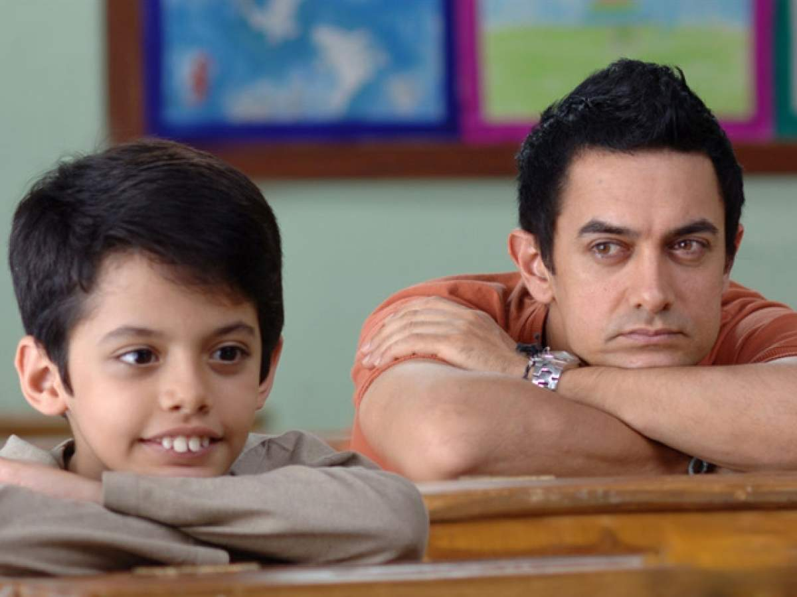

1.Udaan(2010)
Expelled from his school, a 16-year old boy returns home to his abusive and oppressive father.
Director: Vikramaditya Motwane |
Genre:Drama
ImDb Rating:8.2
2.Gangs of Wasseypur (2012)
A clash between Sultan and Shahid Khan leads to the expulsion of Khan from Wasseypur, and ignites a deadly blood feud spanning three generations.
Director:Anurag Kashyap
Genre:Action, Crime, Drama
ImDb Rating:8.2
3.Taare Zameen Par (2007)

An eight-year-old boy is thought to be a lazy trouble-maker, until the new art teacher has the patience and compassion to discover the real problem behind his struggles in school.
Director:Aamir Khan
Genre:Drama,Family
ImDb Rating:8.4
4.Swades (2004)
A successful Indian scientist returns to an Indian village to take his nanny to America with him and in the process rediscovers his roots
Director:Ashutosh Gowariker |
Genre:Drama
ImDb Rating:8.2
5.3 Idiots (2009)
Two friends are searching for their long lost companion. They revisit their college days and recall the memories of their friend who inspired them to think differently, even as the rest of the world called them "idiots".
Director:Rajkumar Hirani
Genre:Drama,Comedy
ImDb Rating:8.4
6.Rang De Basanti (2006)
The story of six young Indians who assist an English woman to film a documentary on the freedom fighters from their past, and the events that lead them to relive the long-forgotten saga of freedom.
Director: Rakeysh Omprakash Mehra
Genre:Comedy,Drama,History
ImDb Rating:8.2
7. Omkara (2006)

A politically-minded enforcer's misguided trust in his lieutenant leads him to suspect his wife of infidelity in this adaptation of Shakespeare's 'Othello'.
Director:CVishal Bharadwaj
Genre:Action, Crime, Drama
ImDb Rating:8.1
8.Raman Raghav 2.0
Ramanna, a disturbed serial killer, constantly evades the law. However, when he finds a soulmate in Raghavan, the investigating officer of his case, he tries to convince him of how similar they are.
Director:Anurag Kashyap
Genre:Action,Crime,Thriller
ImDb Rating:7.4
9.Pink(2016)
After the devastating events of Avengers: Infinity War (2018), the universe is in ruins. With the help of remaining allies, the Avengers assemble once more in order to reverse Thanos' actions and restore balance to the universe.
Director:Aniruddha Roy Chowdhury |
Genre:Drama,Thriller
ImDb Rating:8.1
10.Talvar (2015)
An experienced investigator confronts several conflicting theories about the perpetrators of a violent double homicide.
Director:Meghna Gulzar
Genre:Crime,Drama,Mystery
ImDb Rating:8.2